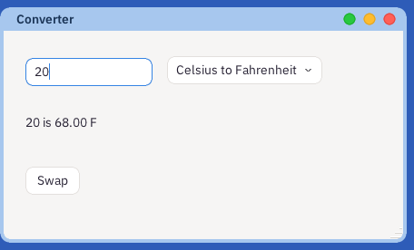
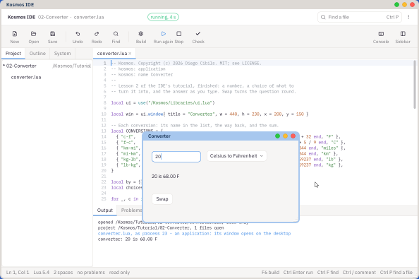

Type a number, choose what to turn it into, and the answer appears as you type. On the way: a field you type in, a list to choose from, and a program that keeps its knowledge in a table rather than in a row of ifs.

What you will have at the end of this lesson.
As in lesson 1: New, New Project, Lua app, the Hello Window template, and the name Converter. Then select everything in hello.lua after the line that uses the UI kit, and delete it: this time the window is built from nothing.
local CONVERSIONS = {
{ "c-f", "Celsius to Fahrenheit", "f-c", function(n) return n * 9 / 5 + 32 end, "F" },
{ "f-c", "Fahrenheit to Celsius", "c-f", function(n) return (n - 32) * 5 / 9 end, "C" },
{ "km-mi", "Kilometres to miles", "mi-km", function(n) return n / 1.609344 end, "miles" },
{ "mi-km", "Miles to kilometres", "km-mi", function(n) return n * 1.609344 end, "km" },
}
Each row is one conversion: a short name, the words a person reads, the conversion that goes back the other way, the sum itself - a function, kept in the table like any other value - and the unit of the answer. Adding a conversion is adding a row; nothing else changes.
local number = ui.field{ x = 24, y = 30, w = 140, text = "20", hint = "a number" }
local which = ui.dropdown{ x = 180, y = 28, choices = choices, value = "c-f" }
local answer = ui.label{ x = 24, y = 92, w = 392, text = "" }
A field is a line you can type in; hint is the grey word it shows while empty. A dropdown is a list to choose from: its choices are pairs - the value a program reads and the words a person sees - which the lesson's project makes from the table, one pair a row.
local function work_out()
local n = tonumber(number.text)
local c = by[which.value]
if not n then
answer.text = "Type a number."
else
answer.text = ("%s is %.2f %s"):format(number.text, c[4](n), c[5])
end
win.dirty = true
end
number.on_change = function() work_out() end
which.on_change = function() work_out() end
on_change runs on every key typed into the field, and every choice made in the list, so the answer is always the answer to what is on the screen. tonumber turns the words into a number, or into nothing when they are not one - which the program says, rather than failing.
Press F5. Type a number; choose another conversion; watch the answer follow.

The converter running beside its code.
swap.on_click = function()
local n = tonumber(number.text)
local c = by[which.value]
if n then
number.text = ("%.2f"):format(c[4](n))
number.caret = #number.text + 1
end
which.value = c[3]
work_out()
end
The answer becomes the question, and the conversion turns round, using the third column of the table. Setting a field's text from the program moves nothing by itself, so the caret is put at the end as a person would expect it.
The finished lesson is in Lesson's Project, under the three dots: 02-Converter.
on_enter as well as on_change.A key reaches whichever control has the focus - here the field - and only it. The field keeps its own words and caret, and calls on_change; your program changes the label and says the window is dirty; the UI kit sends Astra what changed, and only that part of the screen is drawn again. Measured on the ThinkCentre, a key reaches the screen in about two and a half milliseconds.
Kosmos's Preferences is built of these controls: dropdowns, fields and switches, each saving a setting the moment it changes. Open the IDE's System tab, then /Kosmos/Apps, then preferences.lua.